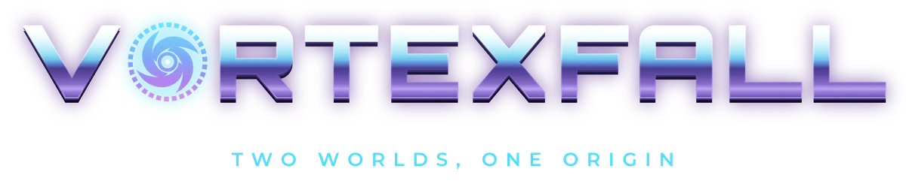
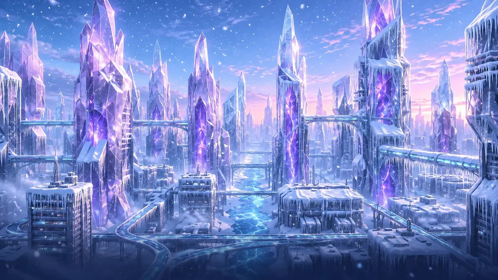
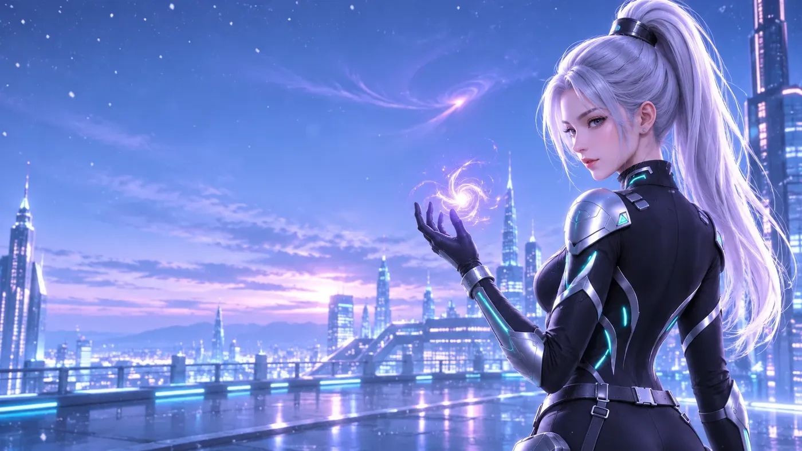
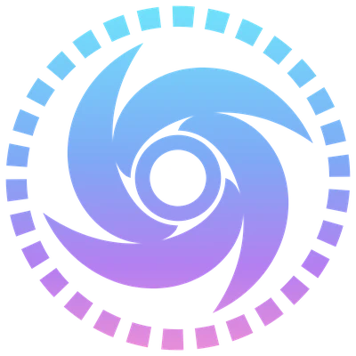
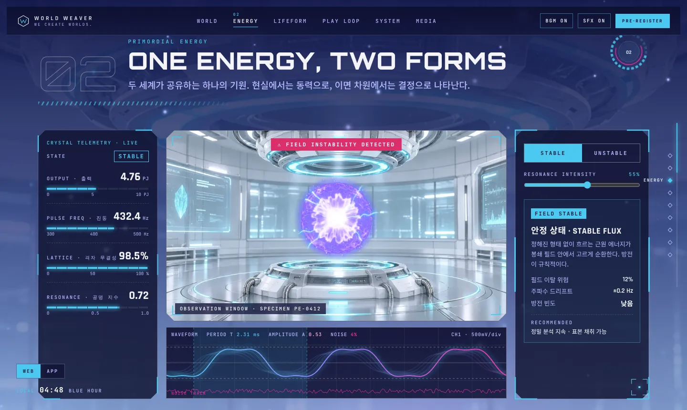
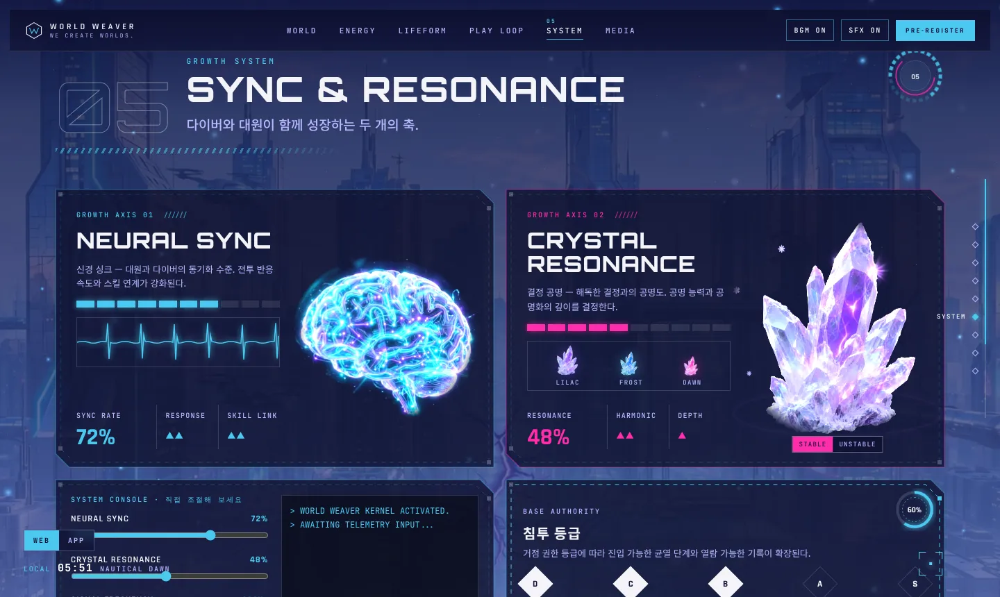
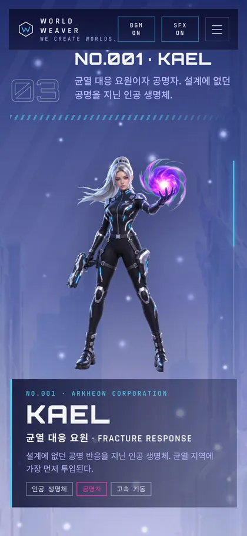

ORIGINAL GAME IP · LAUNCH SHOWCASE · 2026
SAME COORDINATES, DIFFERENT LAWS
하나의 근원에서 갈라진 두 세계,
하늘에 소용돌이 균열이 열린다.
첨단 유리 도시인 현실 세계와 눈과 결정으로 뒤덮인 이면 세계. 두 세계를 잇는 형태 없는 근원 에너지는 이면 세계에서 원석 형태의 결정으로 굳는다. 경계가 무너지기 시작한 세계에 균열 대응 요원 KAEL이 투입된다.



인공 생명체이자 근원 에너지와 공명하는 공명자. 은백색 하이 포니테일, 검정 전술 슈트, LX-71V 레이저 사이드암을 고정 외형으로 설계했다.
WHY A LAUNCH SITE
게임 팬은 출시 전, 세계관과 캐릭터에서 먼저 생긴다. 그래서 게임 정보를 나열하는 홍보 페이지가 아니라 스크롤하는 동안 그 세계 안에 들어가 있는 경험을 목표로 했다. 동시에 하나의 IP를 기획부터 세계관·캐릭터·브랜드·영상·사운드·웹 구현·배포까지 혼자 끝까지 연결해 보는 것이 이 프로젝트의 목적이었다.
비교한다
같은 장소의 현실과 이면 세계를 드래그 슬라이더로 직접 넘겨 보며 "같은 좌표, 다른 법칙"을 체감한다.
흘러간다
스크롤이 곧 시간이다. 새벽 04:12에서 06:40으로 하늘색과 빛 입자가 바뀌며, 스크롤 자체가 이야기 진행이 된다.
들어간다
시스템 경고창과 부팅 로그로 시작하는 접속 연출, 타깃 락온·퀘스트 창 같은 게임 HUD로 게임 안에 접속한 느낌을 준다.
ONE WORLD, CLEAR RULES
AI로 만든 결과물을 하나의 세계로 보이게 하려면, 생성하기 전에 기준이 먼저 있어야 했다. 아이덴티티·컬러·캐릭터·제작 규칙을 먼저 정하고 모든 작업을 그 기준에 맞췄다.
AIDENTITY
가상 스튜디오 WORLD WEAVER와 VORTEXFALL 로고(메탈·플랫 2종), 소용돌이 엠블럼. 첫 이름 EVERGLOW에서 세계관에 맞게 리네이밍했다.

BCOLOR SYSTEM · PALETTE v2
세계마다 팔레트를 나누고, 사이트 UI 컬러는 따로 정의했다.
CCHARACTER & SKILL
KAEL의 외형 기준(헤어·슈트·무기·홀스터)을 문서로 고정하고, 모든 이미지·영상 프롬프트에 같은 문장을 반복해 장면이 달라도 같은 캐릭터로 보이게 했다. 스킬 6종에는 능력의 성격에 따른 컬러 규칙을 정했다.
DPRODUCTION RULES
- 색 세계별 팔레트를 프롬프트에 말로 풀어 넣는다
- 형태 결정은 깎은 보석이 아닌 원석, 에너지는 형태 없는 플라즈마
- 배경 캐릭터는 초록 단색 배경으로 생성 → 코드에서 실시간 제거
- 카메라 루프 영상은 고정 카메라, 첫 프레임과 마지막 프레임 일치
- UI 게임 HUD 모티프, 호버는 카드마다 다른 반응으로 설계
THE LAUNCH SITE
인트로부터 사전예약까지 하나의 흐름으로 이어지는 원페이지 쇼케이스. 섹션마다 다른 인터랙션으로 세계관을 체험하게 했다.







웹과 모바일 반응형 · 앱 목업 페이지에서 WEB / APP 전환 · BGM과 효과음 개별 제어
HOW IT WAS BUILT
| STAGE | TOOL | 어떻게 썼나 |
|---|---|---|
| PLANNING | Claude | 세계관·캐릭터·스킬 설정 정리, 섹션 구성과 카피 작성 |
| IMAGE | Gemini | 도시·설원·소용돌이 같은 풍경과 키 비주얼 |
| IMAGE | ChatGPT | 결정체, 캐릭터 포즈, 영상용 시작 프레임 이미지 |
| VIDEO | Kling | KAEL 캐릭터 루프·스킬 영상 (얼굴 일관성이 필요한 장면) |
| VIDEO | Google Flow | 카메라 움직임과 군중이 있는 장면 |
| VIDEO | Dreamina | 불안정한 에너지 상태 영상 |
| EDIT | ffmpeg | 트리밍, 워터마크 처리, 루프 이음새 정리, 배경 합성 |
| SOUND | Python + Claude | 피아노·기타 음색 테마 BGM(48초 루프)과 효과음 세트 합성 |
| DEV | Claude Code | HTML·CSS·JS 구현, three.js·GSAP 모션, WebGL 크로마키 |
| DEPLOY | GitHub · Vercel | 버전 관리와 자동 배포 |
ISSUE → SOLUTION
CASE 01AI 영상 위에 캐릭터만 띄우기
- ISSUE
- AI 영상은 배경이 함께 생성돼 사이트 배경과 어울리지 않았다.
- SOLUTION
- 캐릭터를 초록 단색 배경으로 생성하고, WebGL로 실시간 크로마키를 적용해 캐릭터만 남겼다.
CASE 02반복 재생 시 끊김
- ISSUE
- 루프 영상이 처음으로 돌아가는 순간 화면이 튀었다.
- SOLUTION
- 같은 영상 두 개를 겹쳐 재생하며 교차시켜 이음새를 없앴다.
CASE 03장면마다 달라지는 캐릭터
- ISSUE
- 생성할 때마다 얼굴·의상이 조금씩 달라졌다.
- SOLUTION
- 외형 기준 문장과 색 규칙을 모든 프롬프트에 고정하고, 기준 이미지를 시작 프레임으로 사용했다.
CASE 04소리 사용성
- ISSUE
- 사운드를 끄면 배경음악과 효과음이 함께 꺼졌다.
- SOLUTION
- BGM과 효과음을 분리해 각각 켜고 끌 수 있게 했다.
앞으로 확장할 것
- 스킬 영상 6종 (훈련실 배경 기준)
- KAEL 캐릭터 상세 · 팀 구성 서브 페이지
- 트레일러 음악 보완